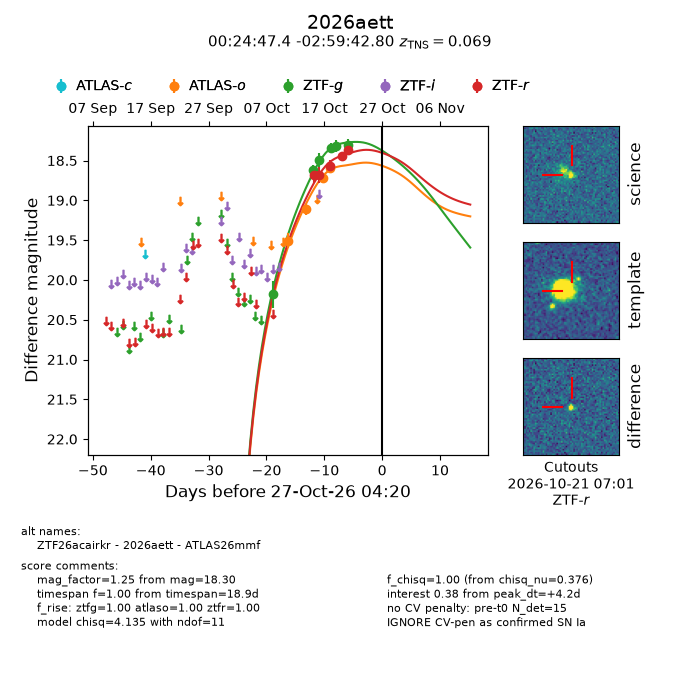
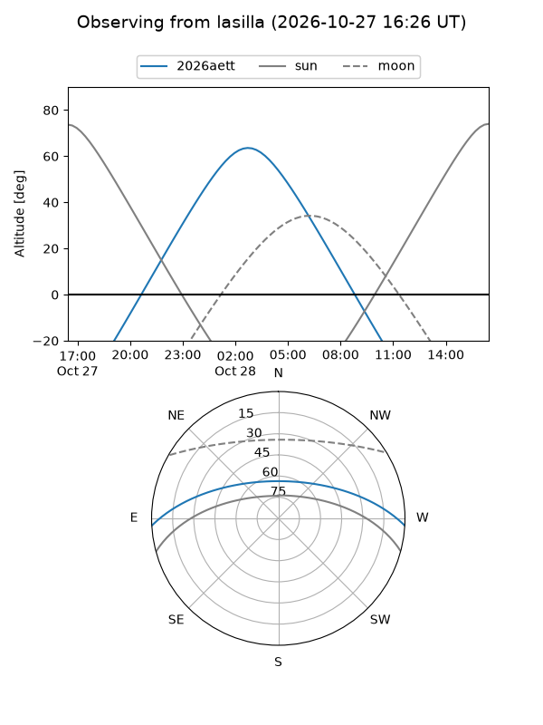
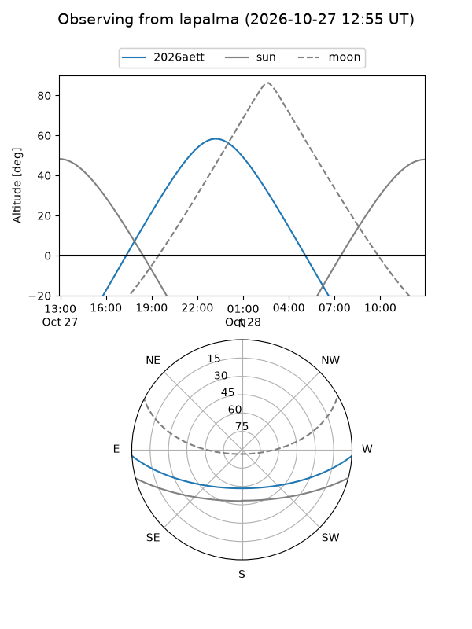
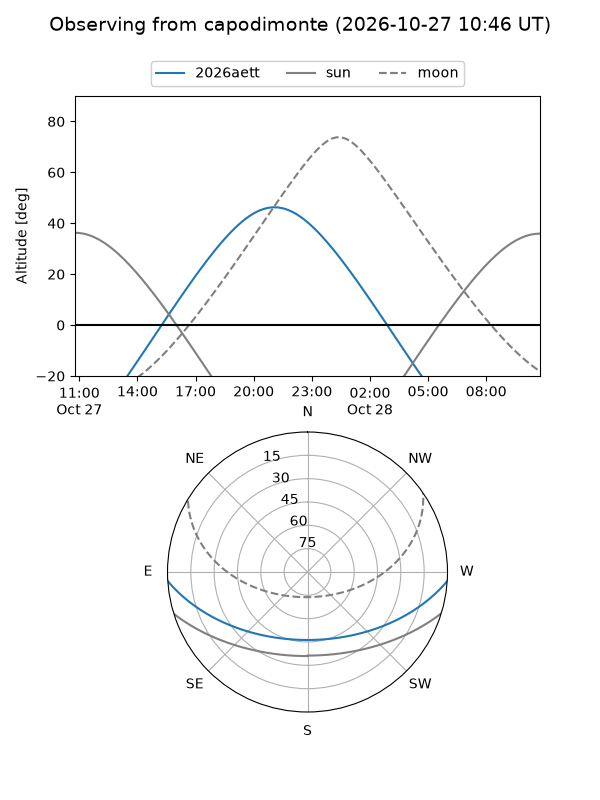
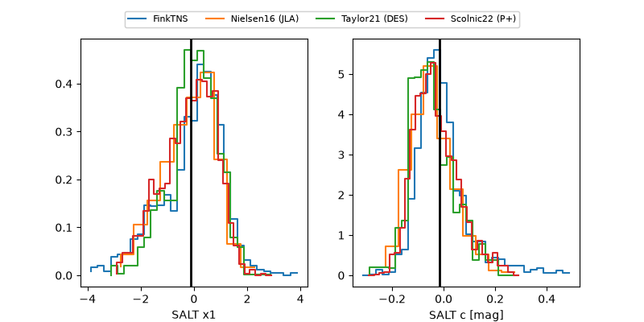

2026aett
Target 2026aett at 2026-10-27 15:53
Aliases and brokers:
FINK-ZTF: ztf.fink-portal.org/ZTF26acairkr
Lasair-ZTF: lasair-ztf.lsst.ac.uk/objects/ZTF26acairkr
ALeRCE-ZTF: alerce.online/object/ZTF26acairkr
YSE-PZ: ziggy.ucolick.org/yse/transient_detail/2026aett
TNS name: wis-tns.org/object/2026aett
Direct TNS query: direct search
alt names
ZTF26acairkr (ztf,fink_ztf)
2026aett (tns,yse)
ATLAS26mmf (atlas)
Coordinates:
equatorial (ra, dec) = 6.1975,-2.99522
equatorial (HMS+DMS) = 00:24:47.39,-02:59:42.80
galactic (l, b) = (106.9975,-65.03930)
Flags:
TNS type: SN Ia
TNS redshift: 0.0690
peak dt: +4.7
Photometry:
last atlaso=18.59, ztfg=18.30, ztfr=18.37
4 atlaso, 6 ztfg, 5 ztfr detections
Lightcurve

Visibility



Additional plots
